Cylinder Head (I)
Cylinder Head Disassembly / Assembly (I)
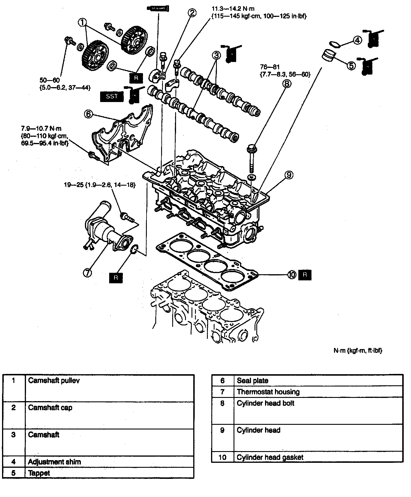
1. Disassemble in the order indicated in the table.
2. Assemble in the reverse order of disassembly.
Camshaft pulley disassembly note
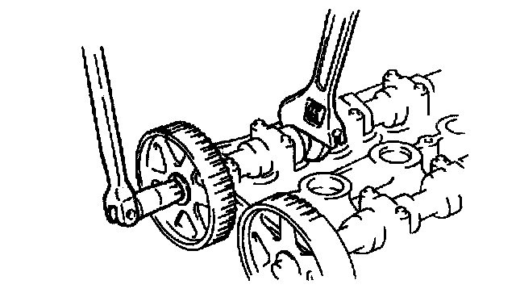
^ Hold the camshaft by using a wrench on the cast hexagon, and loosen the camshaft pulley lock bolt.
Camshaft cap disassembly note
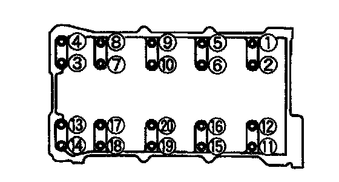
^ Loosen the camshaft cap bolts in two or three steps in the order shown.
Camshaft disassembly note
^ Inspect the camshaft end play.
Cylinder head disassembly note
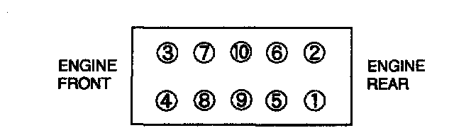
^ Loosen the cylinder head bolts in two or three steps in the order shown.
Cylinder head assembly note
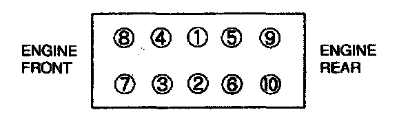
^ Install the bolts and tighten them in two or three steps.
Camshaft assembly note
Caution:
^ Because there is little camshaft thrust clearance, the camshaft must be held horizontally while it is installed. Otherwise, excessive force will be applied to the thrust area, causing burr on the thrust receiving area of the cylinder head journal. To avoid this, the following procedure must be observed.
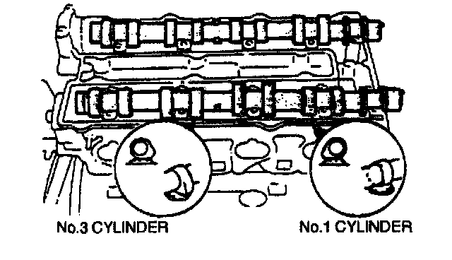
^ Assemble the camshaft onto the cylinder head, facing the cam noses at No.1 and No.3 cylinders.
Camshaft cap assembly note
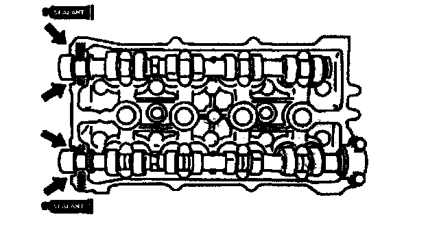
1. Apply silicone sealant to the shaded areas.
2. Install the camshaft caps to the positions from which they were removed.
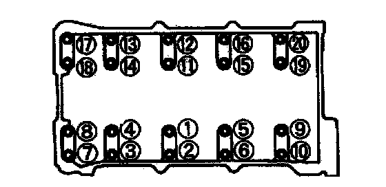
3. Tighten the camshaft cap bolts in two or three steps.
4. Apply clean engine oil to the lip of the new camshaft oil seal.
5. Push the oil seal slightly in by hand.
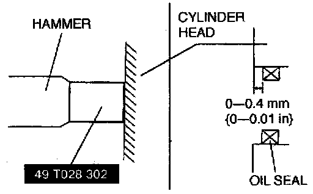
6. Press the oil seal in evenly by using the SST.
Camshaft pulley
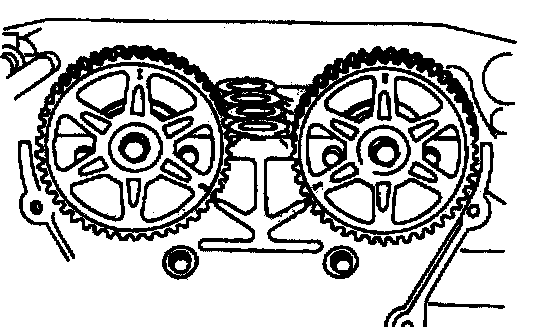
1. Install the camshaft pulleys with the "I" mark (intake side) or the "E" mark (exhaust side) straight up.
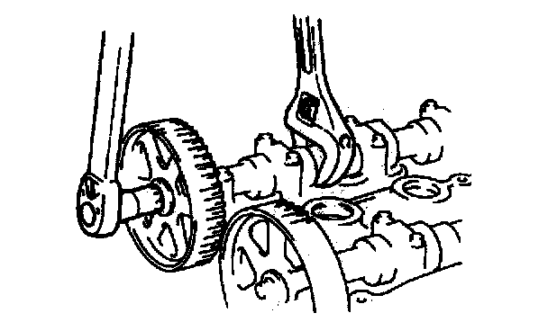
2. Hold the camshaft by using a wrench on the cast hexagon, and tighten the camshaft pulley lock bolt.